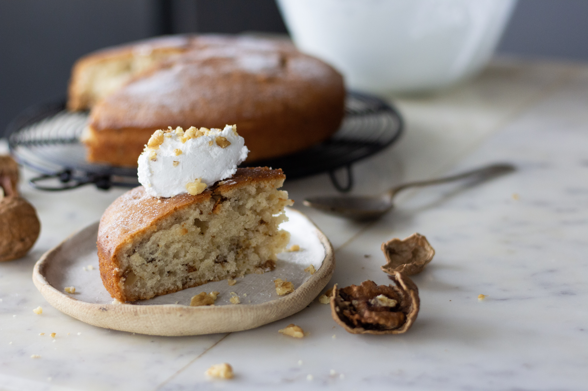

EGGLESS VANILLA SPONGE CAKE
Prep Time: 45 minutes
Cook Time: 30 minutes
Total Time: 75 minutes
Ingredients:
- 1 + ½ cups (180g) all purpose flour (maida)
- 1 teaspoon (4g) baking powder
- 1 cup (285g) yogurt
- ½ teaspoon (3g) baking soda
- ¾ cup (150g) castor sugar
- ½ cup (120mL) vegetable oil
- 1 teaspoon (5mL) Vanilla Extract or Vanilla beans
- ½ cup (63g) crushed walnuts

Instructions:
- Pre-heat the oven to 180°C and line an 8 inch round cake pan with parchment paper.
- In a bowl whisk together flour and baking powder and set a side.
- In a separate bowl add the yogurt and sprinkle baking soda over it and set it aside to foam up.
- Whisk together castor sugar and oil in a separate bowl until pale and well combined.
- Now pour the yogurt mixture to the oil and sugar mixture and mix well.
- Add the vanilla extract.
- Gently fold in the flour and mix until everything is well combined there are no large flour pockets in the batter. Do not over mix at this stage.
- Fold the walnuts in the batter and transfer the batter to the prepared cake pan.
- Bake at 180°C for 30-35 minutes or only until a skewer inserted in the center comes out clean.
Source: Bake with Shivesh